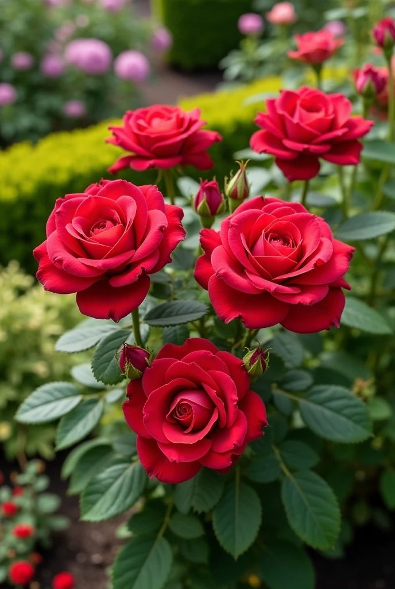
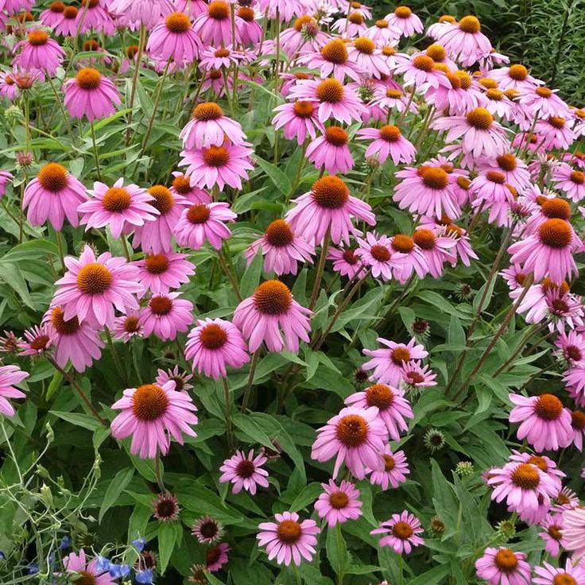
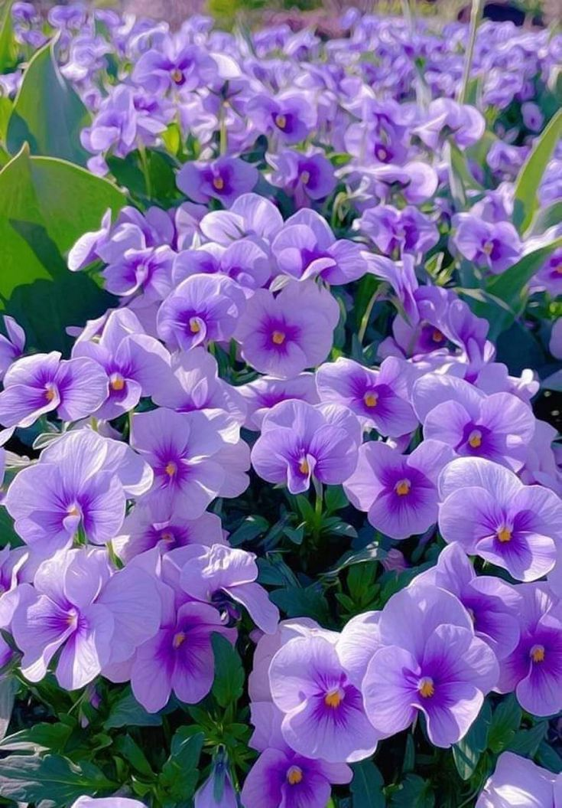
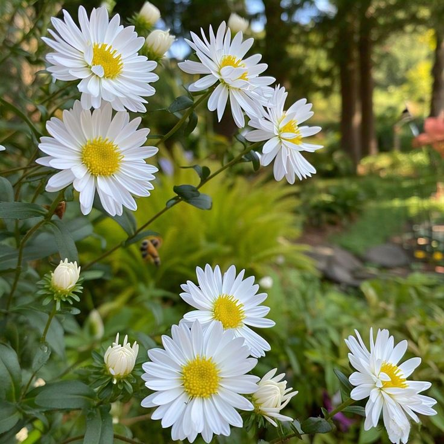
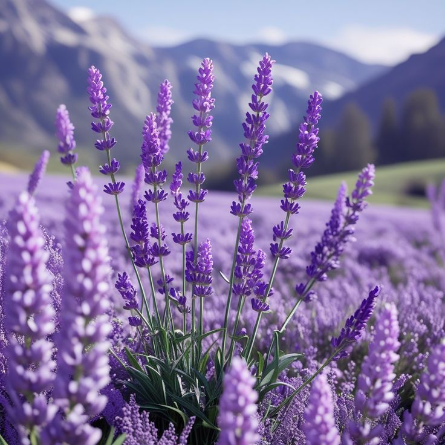
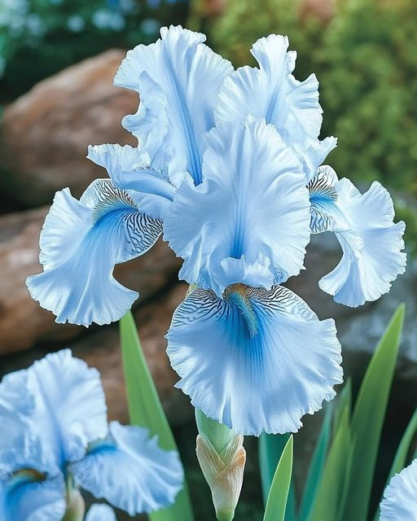
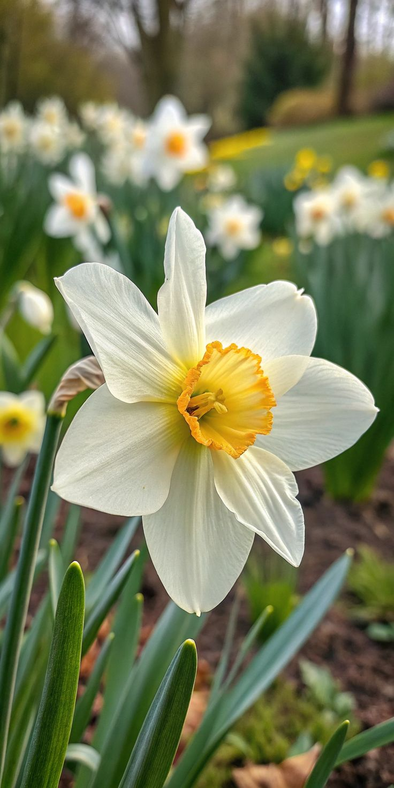

Sebuah pesan untukmu
Aku ingin memperkenalkanmu
beberapa bunga yang indah,
sebelum kamu membaca sesuatu
yang ingin kusampaikan.

Bunga pertama
Rosa canina
Rose atau Mawar tu bunga yang mungkin paling banyak dikenal di dunia, namun keindahannya gak pernah kehilangan daya pesonanya. Kelopaknya yang berlapis-lapis, nyimpen kelembutan sekaligus keberanian — ia mekar di antara duri, namun tetap harum sempurna.

Bunga kedua
Echinacea purpurea
Mungkin namanya terdengar asing ya?, tapi bunga ini justru salah satu yang paling kuat lho rev. Kelopaknya berwarna ungu yang lembut melingkari pusat yang kokoh kaya mahkota. Echinacea tu dikenal sebagai simbol kekuatan — ia mekar bahkan di tanah yang kering sekalipun.

Bunga ketiga
Viola odorata
Kecil, tapi aromanya mampu mengisi seluruh ruangan. Violet tu bunga yang rendah hati — tumbuh dekat tanah, ga berusaha menjulang tinggi, namun keharumannya selalu diingat sama siapa pun yang pernah melewatinya. Ia ngajarin bahwa keindahan sejati tidak butuh pengakuan.

Bunga keempat
Aster amellus
Namanya berasal dari kata Yunani yang berarti bintang — dan memang, dari atas kelopak-kelopaknya memencar seperti sinar bintang yang jatuh ke bumi. Aster katanya mekar di musim gugur ketika bunga-bunga lain mulai tidur, seolah ingin mengingatkan kita bahwa: kamu bisa bersinar, justru di saat yang paling tidak terduga.

Bunga kelima
Lavandula angustifolia
Lavender adalah bunga yang diliat itu bikin tenang. Warna ungu-birunya yang lembut dan aromanya yang khas itu tu digunakan selama berabad-abad buat mengusir kegelisahan dan ngehadirin ketenangan. Ia seperti pelukan yang diam-diam meyakinkan kamu bahwa segalanya akan baik-baik saja.

Bunga keenam
Iris germanica
Iris adalah bunga dengan struktur yang paling anggun Rev — kelopaknya melengkung kaya orang yang lagi nari dan berputar. Dalam mitologi Yunani, Iris adalah dewi pelangi, pembawa pesan antara langit dan bumi. Bunga ini tu melambangkan harapan, kebijaksanaan, dan kepercayaan pada hal-hal yang belum terlihat.

Bunga terakhir — dan terspesial
Narcissus × medioluteus
Narcissus — bunga putih dengan mahkota kuning di tengahnya — adalah tanda awal musim semi. Ia yang pertama berani mekar setelah musim dingin yang panjang, seolah berkata kepada dunia: "Aku di sini. Aku siap." Ia melambangkan pembaruan, awal yang baru, dan keberanian untuk menjadi diri sendiri.
Hari ini, ketukan waktu membawamu sampai di sebuah angka yang sering disebut orang sebagai angka yang manis — tujuh belas. Gerbang kecil yang menandai bahwa kamu kini sedang berjalan menuju kedewasaan yang lebih utuh.
Selamat menyambut usia barumu. ga ada perayaan yang lebih megah selain rasa syukur karena dunia masih mengizinkanku menyaksikan binar matamu hingga hari ini.
Menjadi dewasa mungkin akan membawa banyak tanya, jalanan yang sesekali berliku, atau langit yang kadang mendung. Namun terus inget Rev, kamu punya sepasang sayap yang kuat untuk terbang, dan hati yang cukup lapang buat menerima.
Raih apa yang kamu mau. Kejar apa saja yang membuat hatimu hidup. Jangan takut jatuh, karena dunia ini terlalu luas untuk dilewati tanpa keberanian.
Di setiap langkahmu ke depan, ada doa-doaku yang memelukmu tanpa suara.
Di antara miliaran manusia yang sibuk mencari arah, aku sudah menentukan koordinatku sendiri. Maka ketahuilah satu hal:
Sejauh apa pun dunia membawamu melangkah, atau seletih apa pun perjalanan yang kita tempuh masing-masing, arah kepulanganku tidak akan pernah berubah.
Kamulah rumah yang selalu ingin kutuju di akhir hari.
Sampai jumpa di pertemuan yang kita tunggu. Pertemuan yang akan melipat jarak, menyembuhkan rindu, dan merayakan semua proses yang berhasil kita lewati bersama.
dengan sepenuh rasa, untukmu
🌸🌸🌸